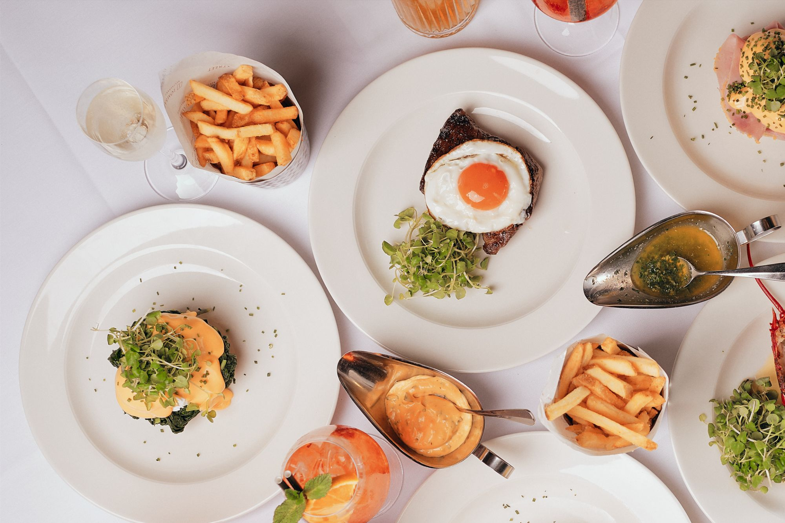

Menus
Menus that follow the seasons
Classic brasserie cooking from Head Chef James Holden, built on British produce from small farms, fisheries and dairies.
Fish from British shores, vegetables from local growers and meat from small, award-winning producers. Simply served, honestly sourced.
Good to know
Questions, answered
Does 1 Lombard Street have a vegetarian and vegan menu?
Yes. There is a dedicated vegetarian and vegan menu alongside the breakfast, à la carte and dessert menus, and the kitchen can plan around other dietary requirements.
When is breakfast served at 1 Lombard Street?
Breakfast is served Monday to Friday from 7am in the Brasserie, opposite Bank station.
Where does the food come from?
Head Chef James Holden cooks seasonal British food with produce from named suppliers, including Peter Hannan's salt-aged beef, Happy Egg Co. eggs and Neal's Yard cheeses.